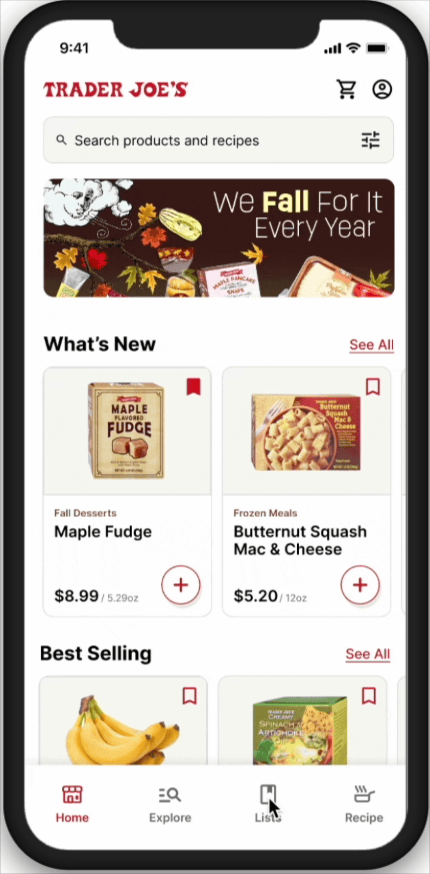

Designing the app Trader Joe's fans have been asking for.

Trader Joe's has one of the most loyal customer bases in grocery. And no app.
Trader Joe's has built a reputation on staying low-tech. No self-checkout, no loyalty program, and no app. For a lot of customers that's part of the charm, but charm doesn't help you figure out if the 'Everything But the Bagel Seasoning' is back in stock before you drive across town.
We asked: if Trader Joe's built an app, what would it look like? Not a generic grocery app with Trader Joe's branding slapped on but something that felt like Trader Joe's and solved the specific friction their shoppers actually face.
How can we assist busy millennials who cook, plan their grocery shopping?
This was our design frame from the start. Trader Joe's core shoppers are people who cook, who live in cities, and who don't have time to make multiple trips to the grocery store.
 The problem chain: lack of time to plan meals leads to unclear ideas about what to buy, which leads to struggling to shop effectively
The problem chain: lack of time to plan meals leads to unclear ideas about what to buy, which leads to struggling to shop effectively
None of the competitors analyzed were solving all three parts of this problem chain. Planning and shopping were disconnected experiences.
We mapped two separate journeys: going to the store, and ordering online. Both were frustrating in different ways.
 User journey map of physical grocery shopping in store. Pain points cluster at Prepare and Shop stages: forgetting items, navigating crowds, and discovering items were out-of-stock too late
User journey map of physical grocery shopping in store. Pain points cluster at Prepare and Shop stages: forgetting items, navigating crowds, and discovering items were out-of-stock too late
 User journey map of online grocery shopping. Pain points cluster at Choose App and Shop: switching between apps, confusing layouts, and pop-up distractions
User journey map of online grocery shopping. Pain points cluster at Choose App and Shop: switching between apps, confusing layouts, and pop-up distractions
The in-store journey broke down at preparation when people forgot what they needed and couldn't plan ahead. The online journey broke down at app selection with too many platforms and not enough trust in any of them. Both pointed to the same gap: no single platform that connected meal planning, shopping lists, and available products.
The competitive landscape confirmed it.
Every major grocery app had a quick reorder feature. None had personalization, collaboration or planning embedded into them.
 Competitive analysis shows that every competitor has a reorder feature, but none have personalization, collaboration, or planning.
Competitive analysis shows that every competitor has a reorder feature, but none have personalization, collaboration, or planning.
Gallery walk, Information Architecture, and three features that didn't exist anywhere else.
 Gallery walk where we posted our journey maps, IA, and early concepts and invited feedback via sticky notes. The responses shaped our final feature prioritization.
Gallery walk where we posted our journey maps, IA, and early concepts and invited feedback via sticky notes. The responses shaped our final feature prioritization.
The gallery walk provided us quick feedback. Users responded most strongly to: meal planning built into the shopping experience, the ability to share lists with others, and features that respected accessibility needs. Those became our three focus areas.
 Information architecture (IA) outline four main tabs (Home, Explore, Recipes, Lists) with Cart and Account at the top level. Lists supports both Voice AI and collaborative shopping.
Information architecture (IA) outline four main tabs (Home, Explore, Recipes, Lists) with Cart and Account at the top level. Lists supports both Voice AI and collaborative shopping.
The IA was built around how Trader Joe's customers actually shop, habitually and fast. The Home tab features what's new, seasonal, and recently bought. Recipes connects directly to product availability at your nearest store. Lists supports both solo planning and group shopping. Every navigation decision was grounded in the journey map findings.
Three features that no grocery app was offering all grounded in how Trader Joe's shoppers actually live.
Meal Planning
Recipes linked directly to real-time product availability at your nearest store. Browse a recipe, see which ingredients are in stock at Williamsburg, and add them all to your list in one tap. The planning and the shopping trip become one continuous flow instead of two separate tasks.

Plan once, shop once.
The biggest pain point from both journey maps was the gap between deciding what to cook and knowing what to buy. Recipe-to-cart integration closes that gap so users see ingredient availability at their store before they leave home.
Collaborative Shopping Lists
Share a list with roommates, a partner, or anyone splitting a Trader Joe's run. Everyone can add items in real time. No more texting back and forth about whether someone already picked up the Mandarin Orange Chicken.

Grocery shopping is rarely solo.
Our research showed that many Trader Joe's shoppers coordinate with roommates or partners around the weekly shop. No existing grocery app supported real collaboration, just individual lists. This feature addressed a real behaviour that was being served by group chats and Notes app screenshots.
Accessibility
We introduced voice-to-list, dietary preference filters, and high-contrast modes. Designed to make the app usable for people with mobility limitations, visual impairments, or dietary restrictions that require careful label checking in store.

The in-store experience has limits. The app doesn't have to.
Trader Joe's physical stores aren't the most accessible environments with crowded aisles, limited signage, and no way to pre-check ingredients for dietary needs. The app can do the work the store can't: filter by allergy restrictions, support voice input, and let users filter the entire catalog before they arrive.
What I learned
The journey map is where the real design problems live.
Mapping both in-store and online shopping journeys side by side showed us that the same emotional pattern appeared in both: frustration at the planning stage, relief at checkout. The design opportunity wasn't inside the store or inside an app, it was in the space between them. That's where we integrated our three features.
The gallery walk changed our feature priorities.
We expected meal planning to be the key feature for our focus. The gallery walk feedback pushed accessibility and collaboration to equal importance. Co-designing is one of the fastest ways to invalidate your own assumptions.
Brand voice is a design constraint, not a finishing touch.
Trader Joe's copy is warm and unique. Every screen had to pass a simple test: does this sound like Trader Joe's, or does it sound like a generic grocery app? That filter produced better decisions than any visual guide would have, it forced us to think about what the brand actually values rather than just what it looks like.